2025: The Year in Review
As we wrap up 2025 it is impossible not to look back at the last twelve months with a sense of resilience. It hasn't been smooth everyone. We have navigated the choppy waters of new tariffs and watched as strap production centralized even more into the hands of a few manufacturing giants. But if you look past the logistical headaches, 2025 was actually a pretty good year.
 Nenad Pantelic • July 3, 2023
Nenad Pantelic • July 3, 2023
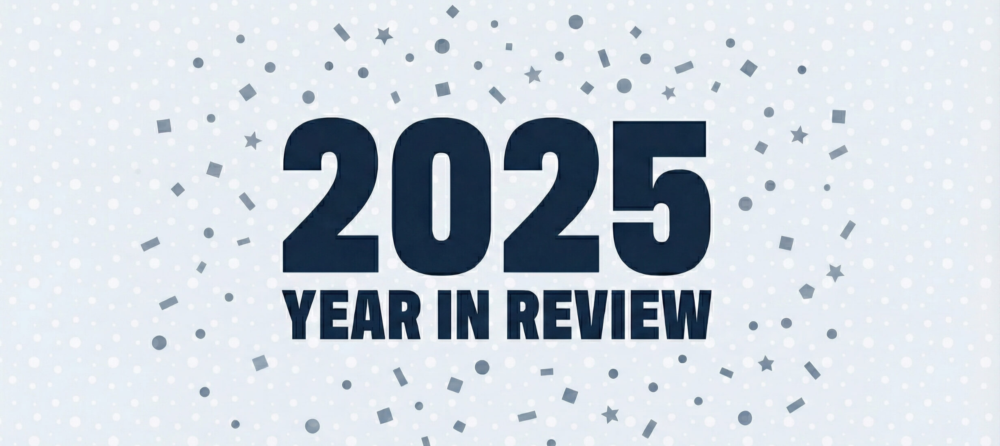
We saw independent makers show incredible creativity, microbrands out-innovating the big houses, and legends returning from the dead. It was a year where passion projects outshined mass production.
Here are my picks for the people, brands, and products that defined the year.
Breakthrough Brand of the Year: Anchor Straps
If I had to pick one brand that defined the feed in 2025, it is Anchor Straps. Seemingly overnight, they are everywhere. If I am scrolling through Instagram, browsing Reddit, checking WatchCrunch, or chatting in the TGN Slack, Anchor is there. It is rare to see a brand capture attention so quickly, but they earned it. With a fantastic product catalog, top-tier photography, and genuine involvement in social media conversations, they have quickly become a favorite for many. Deservedly so.
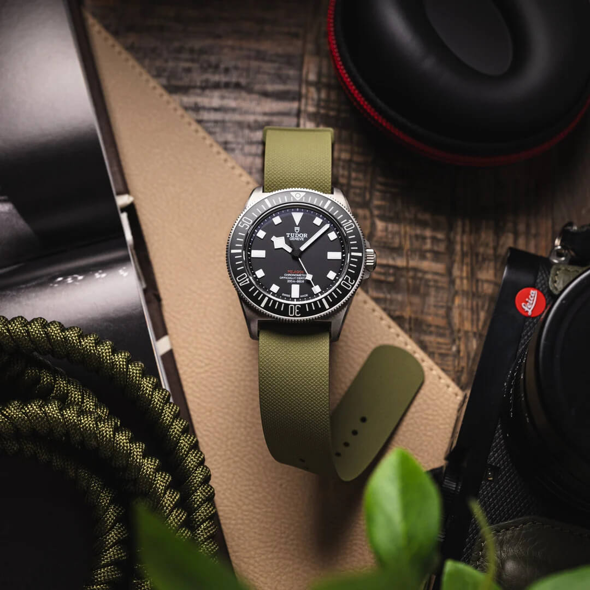
Arken’s Sailcloth & Rubber Options
It has been a joy to watch Arken evolve this year. Ken, the man behind the brand went all-in on arguably the second most important part of the watch wearing experience: the straps. He didn’t just source generic off-the-shelf products, but he designed, tested, and developed a fantastic line of sailcloth and rubber straps.
He also introduced titanium link adapters that can take any other strap (two piece or pass-through). Kudos to Ken for listening to his community and pushing the enthusiast angle hard. He is proving that you don’t need to be a conglomerate to make a world-class experience.
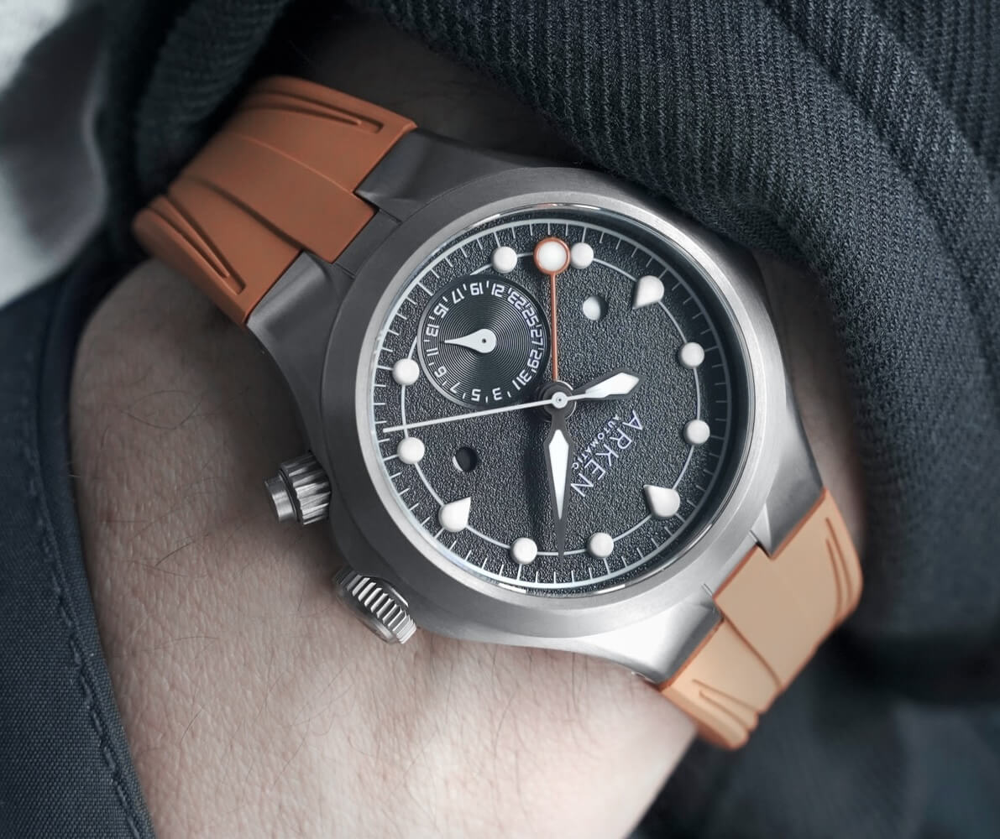
The Swiss Giant You’ve Never Heard Of
If you read one strap industry deep-dive this year, make it the Worn & Wound exposé on Biwi SA. We often talk about "Swiss Made" cases and movements, but we rarely discuss who is actually creating all the rubber straps for the big brands.
The article showcased this Jura Mountains-based powerhouse that quietly manufactures high-end rubber straps for nearly every brand you can think of. It is a fascinating editorial that team at Worn and Wound produced.
Read the full story here: Worn & Wound
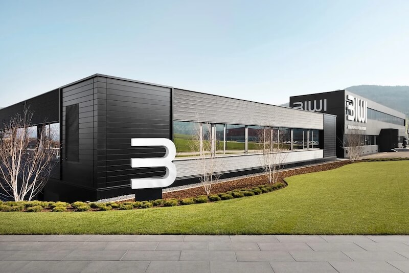
MING’s Titanium Bracelet
In 2025, MING reminded us that a "strap" doesn't have to be leather or rubber. Their Polymesh bracelet is nothing short of an engineering marvel. Using laser sintering (3D printing with metal powder), they created a Grade 5 titanium mesh that is a single, unified piece—no pins, no screws, just 1,693 interlocking components printed simultaneously. It manages to be fluid like fabric but durable like metal. It is an alien tech, and I love it.
Read my breakdown of the tech here: MING Polymesh

The Year of the Collaboration
2025 wasn't just about solo efforts. It was the year many brands teamed up to make something unique. We saw StrapHabit partner with the Anti Watch, Watch Club., with Stadard H, and with Divecore for some cool limited runs. Substation collaborated with Typsim to perfectly match their vintage aesthetic. Delugs worked with Kolokium on straps that matched those insane dials, and Molequin teamed up with Justin Hast and created a tasteful product line. It was wonderful to see these creative minds intersecting to bring us something different and fresh.
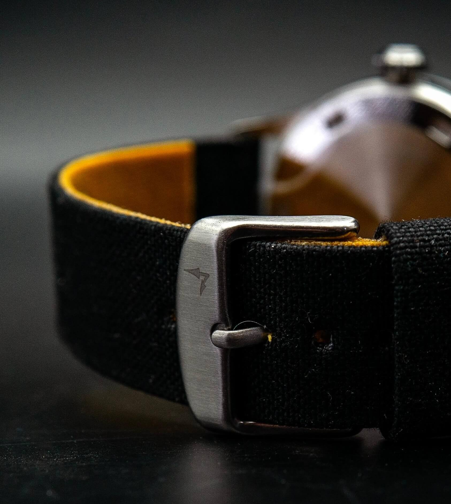
The Return of the Phoenix
Just when we thought we had lost a piece of history, the Phoenix rose (from the ashes). The original maker of the MoD spec straps returned to a limited production this year. For a moment it looked like they had gone silent for good, but they are back offering their famous heat-welded nylon straps via their eBay page.
Check out our review: Phoenix Strap Review
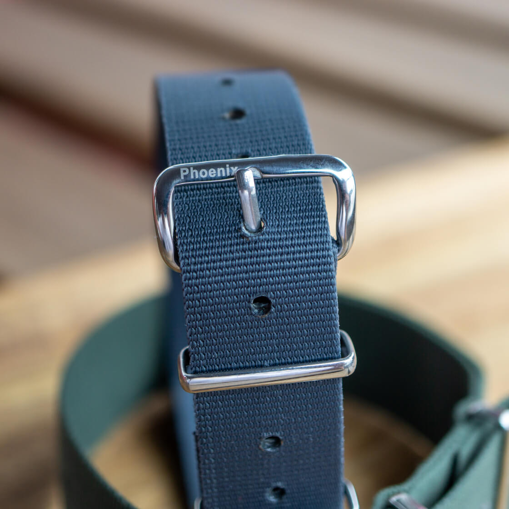
Christopher Ward: The R&D Kings
I have to talk about Christopher Ward. Many brands were just putting new dial colors on old cases, but CW spent 2025 refining and innovating. They have aggressively pushed the envelope with enthusiast-forward features. More importantly, they haven't kept everything in the design studio, but have actually released a ton of awesome new straps.
Between the redesigned clasps on The Twelve series, comfortable and modern V-Straps made from VELCRO® and Cordura®, and their new rubber straps that integrate lumed elements into the strap edges, they are doing genuine R&D. Christopher Ward hats off to you!
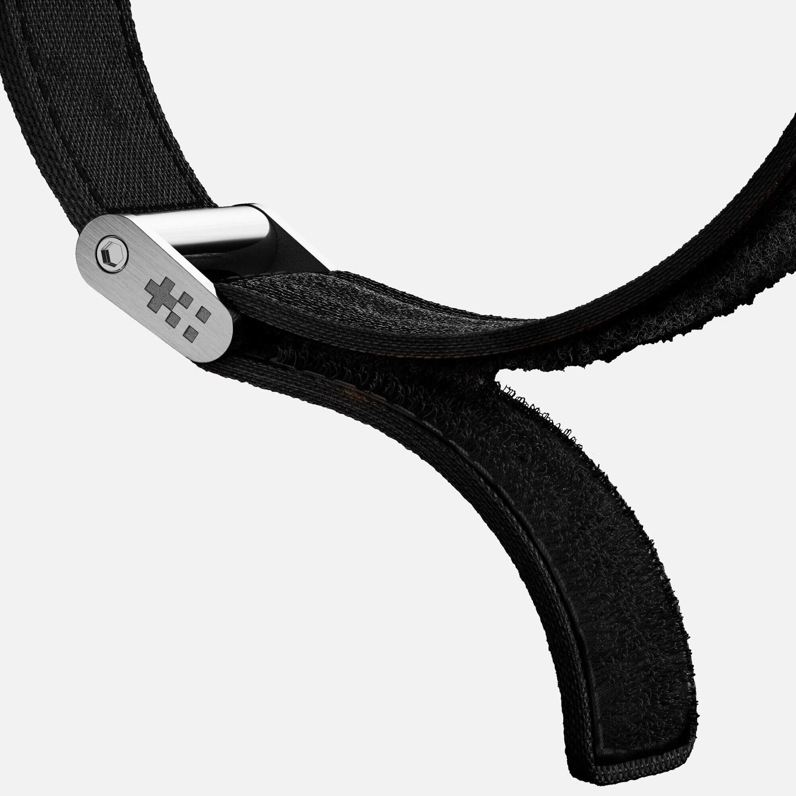
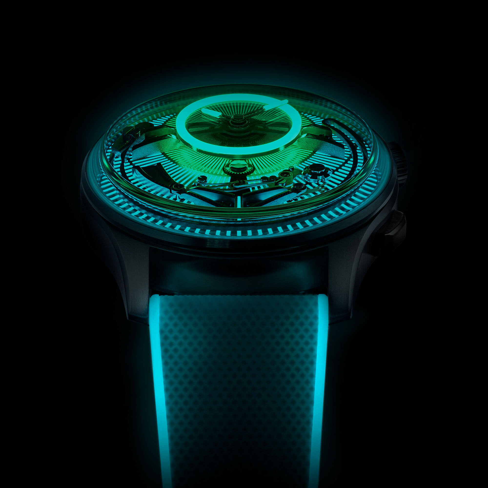

Artisanal Maker of the Year: Roiberd Atelier
In an era of mass consolidation, finding a new, true artisan is a gift. This year I was amazed by the work of Roberto at Roiberd Atelier. Operating out of Spain, Roberto is keeping the old ways alive. His sourcing of top-tier leathers (Epsom, Saffiano, Babele, Dollaro) is impeccable, but it is the construction (the liners, the hand-stitching, the edge paint) that sets him apart.
In 2025 it is great to see that one person can still stand out against the factories.
Visit his atelier: roiberd.com
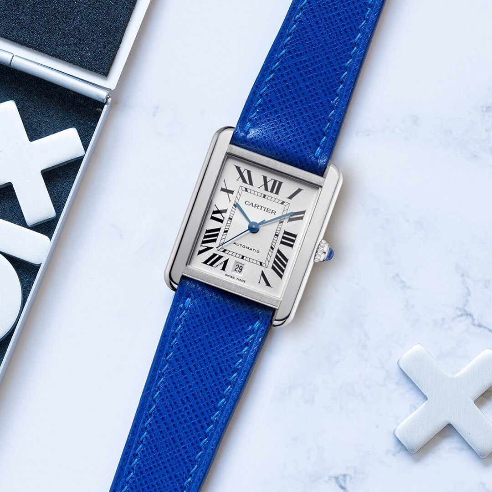
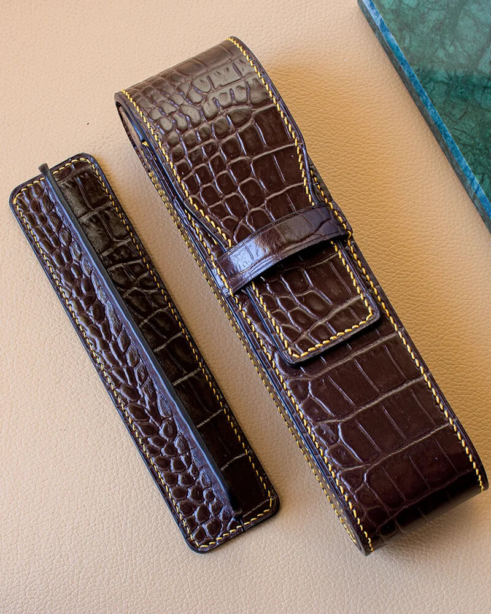
Nodus is Back (and Better)
Finally, a massive shout-out to Nodus. 2025 threw them a curveball that would have sunk a lesser brand. Their innovative extension clasp managed to get the attention of... a certain brand, and let's just say it wasn't a friendly "hello."
But Nodus didn't fold. After some courtroom headaches, they retired the old name, made significant updates to the design, and launched the new Nodus Extension Module (NEM).
This is excellent news for the industry. We applaud Nodus for being pioneers in on-the-fly adjustment for microbrands. They fought for their right to innovate, and the result is a better product for all of us. I genuinely hope to see the NEM adopted by many more microbrands in the coming years.
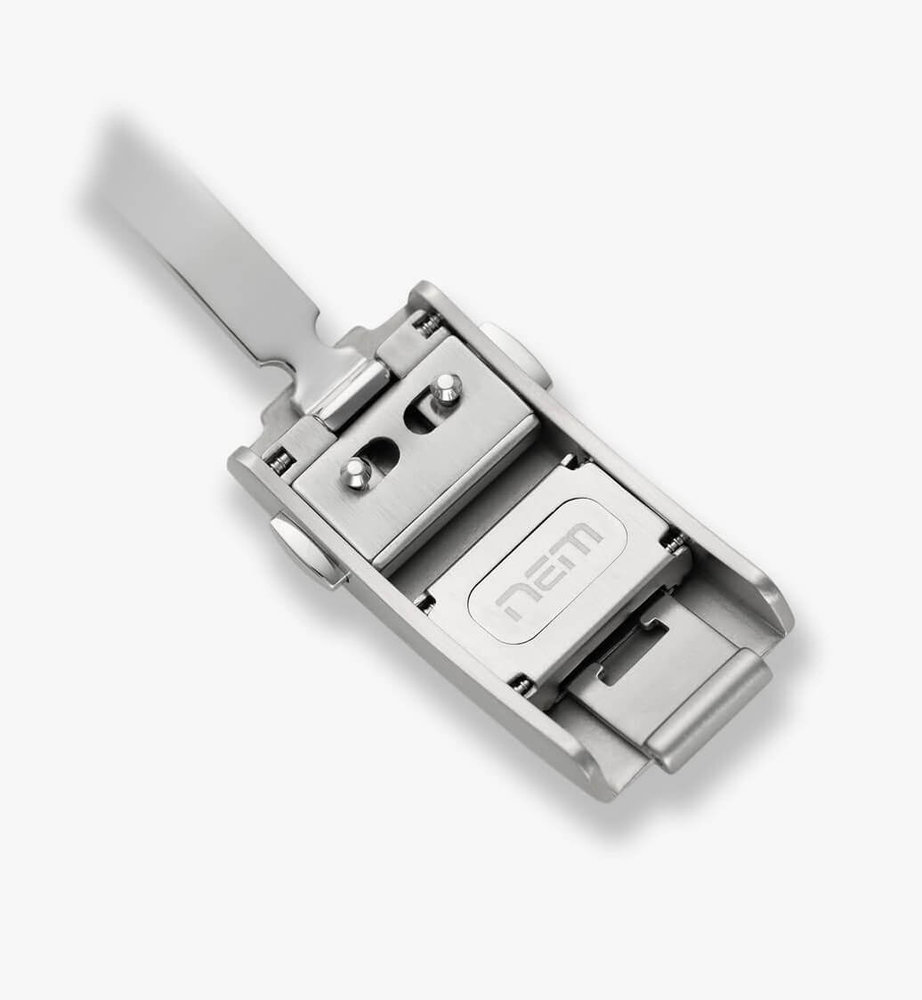
Happy Holidays and See you in the New Year
Despite the tariffs and the noise, 2025 proved that the passion for great gear is alive and well. Here is to a peaceful holiday season and a 2026 filled with perfect fits, zero visible spring bars, and on-the-fly quick-adjust clasps for everyone 🎉